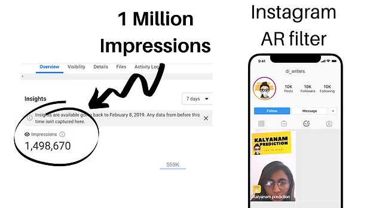

You might have come across some good AR filters on Instagram stories recently. For me, whenever I see a new filter, I get excited to try it out and to think about why it is resonating with the users.
Recently, my friend Dimple Meera Jom who is leading the team which manages the Instagram account "Di_writers" came up with a very interesting AR filter which went on to get more than 1 Million impressions on Instagram
Hence I decided to reach out to her to pick her brain in order to let you all know how you too can possibly bring up a viral AR effect on your Instagram.
It's basically a random marriage predictor which will stop at any of the 6 imaginary scenarios which predict how your love life is going to end up in. Exciting right? (Malayalam Language is used since the account is from Kerala. "Kalyanam" means Marriage in Malayalam )
You might have seen the AR filter based out of the "Coffin Dance Meme" . What that creator did was to take-up something that was already viral on the internet and to create an AR version for it.
Just like that Dimple picked a Just like that Dimple picked a popular game among Keralites called "FLAMES/SOLAR" Just like that Dimple picked a (Sanyasam, Olichottam, Love Marriage, Arrange Marriage, Register Marriage) and developed the AR version for it. I mean who wouldn't want to test that out!
- Dimple
She already enjoys more than 20,000 followers on her Instagram account. She knew what exactly would her audience want as an AR filter. My guess is that the topic of marriage is very much discussed among females and that's what her majority audience was too!
Dimple wanted the AR filter to have all the elements of her brand Di_writers. It's humorous & light in tone. The colour palette as you can see is yellow which is the primary colour of Di_writers and she also placed the face and the mascot of her brand - The "DiWriter girl" in all those prediction cards.
For me, this is a crucial part. If you don't integrate your brand into the AR filter, you gain pretty much nothing even if the filter goes viral.

Just like anything, the result doesn't come to you, you have to get yourself to it. And it takes energy and strategy. Initially, she created hype on her Instagram by telling a humorous story which grabbed the attention of her followers.
In Malayalam, she brilliantly gets the whole story across to the audience by mixing her personal perspective and humour.
It translates to "Try out the effect directly from the profile. I finished creating this effect 3 am last night! This shows my dedication to understanding how your marriage is going to be!"
Never use the same old corporate gibberish to promote anything on social media! You have to be yourself!
Her whole team shared it on their profiles which might also have helped in reaching more audience initially. This is something that many brands miss. If you're running a campaign, you and your team should be the ones who should be participating before anyone else!
It didn't take much time after that to see that filter go viral. Within 5 days time, the filter got more than 1 Million impressions.
In a few days time, the filter was also being shared by huge celebrities in Kerala ranging from Sania Iyyappan to Diya Krishna.
All credit goes to Dimple and her team for grabbing the opportunity that Instagram AR provides early on.
I hope this small case study will help you or your brand to launch a successful AR filter campaign which pretty well might be the thing for the days to come.
If you want to learn on the technical part of creating a random card generator AR filter, you can try it out by using AR spark Studio by following the instructions here [Video Tutorial].
Thank you for reading :)
[About the author: Jaison Thomas is an entrepreneur, speaker & writer. He co-founded the digital marketing agency, Blusteak .]